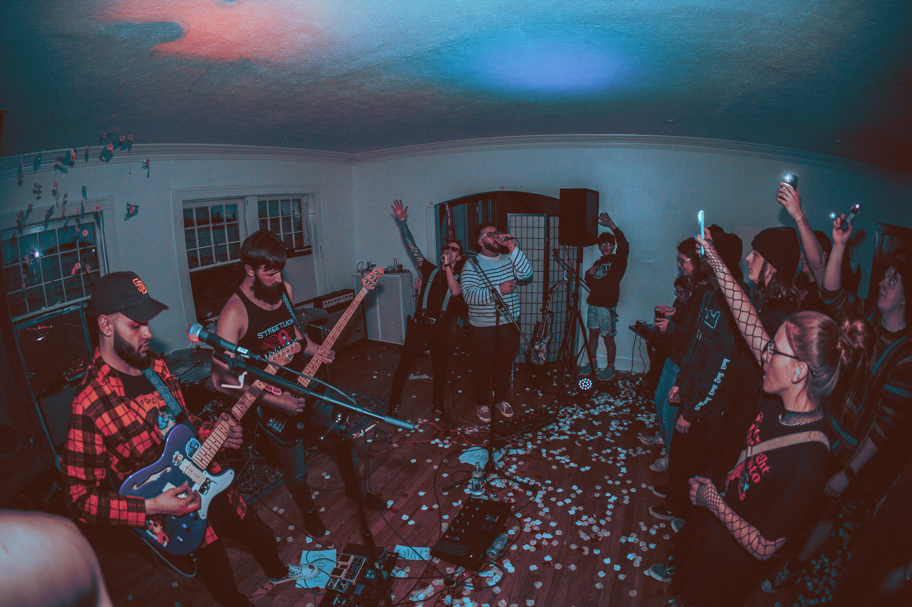

MyHeartYourGlove
MyHeartYourGlove (MHYG) is a Midwest Emo band originating from Cleveland, Ohio, established in 2022. The lineup features Jared Waterwash-Rodriguez on lead vocals and guitar, Ivan Patrick Suñer on bass, and Kyle McGill Percy on drums. Influenced by a diverse range of artists such as Empire! Empire! (I Was a Lonely Estate), Freethrow, Snowing, AFI, Thrice, and Thursday, MHYG crafts a distinctive fusion of emotive soundscapes. MHYG boasts two EPs in their discography: “Overstayed Your Welcome” (2023) and their latest release, “Buick Killer” (2024).
 Instagram, Bandcamp, Spotify, Apple Music, X (Twitter), Contact MHYG
Discography
Buick Killer (2024)
 Bandcamp, Spotify, Apple Music
Bandcamp, Spotify, Apple Music
MyHeartYourGlove’s 3rd release, and first release as a power trio with Jared taking over lead vocals.
Ohio Revised Code Section 4511.21 | Speed limits - assured clear distance. No person shall operate a motor vehicle, trackless trolley, or streetcar at a speed greater or less than is reasonable or proper, having due regard to the traffic, surface, and width of the street or highway and any other conditions, and no person shall drive any motor vehicle, trackless trolley, or streetcar in and upon any street or highway at a greater speed than will permit the person to bring it to a stop within the assured clear distance ahead.
Opening track, “His Boy Elroy” places MyHeartYourGlove as a band born in the midwest-emo, DIY-band fertile crescent of the rust belt by painting a cinematic collage of grief and trauma. Bookended by our secret sauce of pedalboard circuitry to generate Jetsons-inspired feedback signals and garnished with recorded sound effects, “His Boy Elroy” is a soulful rock-driven dirge that transports you to the existential danger of The Dwight D. Eisenhower National System of Interstate and Defense Highways.
Title track, “Buick Killer” recounts the loss of a Buick LeSabre, owned by our vocalist, Jared, after it was hit by a drunk driver in an upbeat singer-songerwriter-meets-disco groove. We are happy to report that the driver has been apprehended, and the Buick LeSabre was repaired in time for our album’s photoshoot!
Shake the rust off your square dancing spurs with “Screw Factory XI”, a laid back instant-oldie about self acceptance and moving on from lost loves (both people and automobiles). Yeehaw!
“What Do We Do Now?” wraps up the album with the wild angst and energy of myspace/soundcloud scramz balanced with the delicate precision, lush production, and hi-fi shimmery bloom, signature to MyHeartYourGlove. MyHeartYourGlove would like to thank our fans for patience in this release of songs we have been playing for you all for the better part of this past year and would like to remind them that We’ll Be Back Before You’re Gone!
Overstayed Your Welcome (2023)
 Bandcamp, Spotify, Apple Music,
Bandcamp, Spotify, Apple Music,
MyHeartYourGlove’s debut into the genre of midwest emo!
Opening track, Bill Haverchuck is a modern evocation of an internal struggle felt by titled character, Bill Haverchuck from the Emmy nominated show, Freaks and Geeks. Martin Starr (also known for playing anti-authoritarian satanist hacker, Bertram Gilfoyle in Silicon Valley, Conductor of the General, William Fuller in Drunk History as well as Boombox Guy in the the music video for Madeon’s Pop Culture) heartfelt performance as Bill Haverchuck captures the conflict between the joyful escape of television from an unkind and confusing world and the social consequences and isolation of retreating away from the people who care about you. Melancholy vocals and a pop-punk-adjacent groove build, collapse, and then bloom into a lush and atmospheric and somber interlude featuring Jared’s legendary Giga-Delay, expertly-satisfying cymbal crashes and a stereo shimmer reverb on the bass guitar track! A highly danceable bop with a nice break for mildly uncomfortable, but productive self-reflection.
“It was a question I had worn on my lips for days - like a loose thread on my favourite sweater I couldn’t resist pulling - despite knowing it could all unravel around me.
“Do you love me?” I ask.
In your hesitation I found my answer.” - Lang Leav, Love and Misadventure
With That Guy Has a Nice Sweater, MyHeartYourGlove joins the elite echelon of Weezer (Undone), The Promise Ring (12 Sweaters Red), and Spongebob (The Striped Sweater Song Live at the Krusty Krab 2001) of artists in the musical tradition of recognizing the emotional impact of cozy, but delicate outerwear.That Guy Has a Nice Sweater completes the album with a ballad of self-reflection, healing growth through perspective, and cycles of despair after a fractured relationship. Building soundscape of stadium-shaking drums, tastefully tight bass fills, and cleverly refined guitar riffs that soars above the mix, TGHaNS contrasts the delicate articulation of Bill Haverchuck with a rollercoaster of emotion and intensity!
Contact Information
Please feel free to contact us if you have any questions or would like to discuss potential projects.